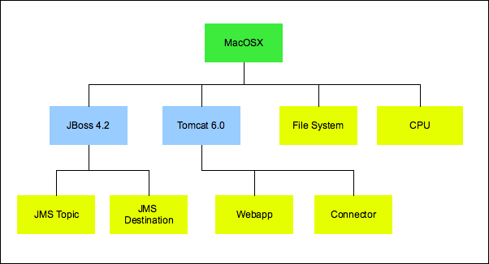
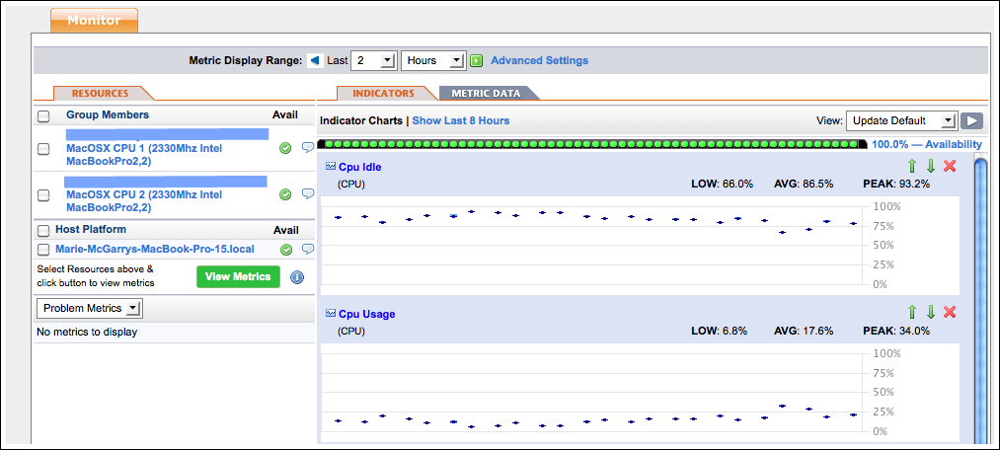

Topics marked with * relate to features available only in vFabric Hyperic.
These topics describe the Hyperic Inventory Model: how resources are classified by type, and how types relate to each other.
Resources and Resource Categories in Hyperic
This page describes the two main ways that a individual managed resource is classified in Hyperic inventory: inventory type and resource type. Inventory type relates to a software dependency hierarchy, most notably, Hyperics's platform - server - service hierarchy. Resource type relates to the "brand" or vendor associated with a resource.
Topics marked with * relate to features available only in vFabric Hyperic.
Inventory Type
A resource's inventory type is the first level of classification Hyperic applies to resources. Inventory types serve two purposes:
- Resource hierarchy - Several inventory types identify where a resource fits into a resource hierarchy. All Hyperic resources are classified as one of the following inventory types.
- platform - usually corresponds to a machine running an operating system
- server - a software product running on an operating system, for instance a database or application server
- service - an integral component of a platform or server, for instance, a file server mount, database table, or a connection pool.
- Grouped resources - There are two inventory types that correspond to multiple individual resources. You group resources for a variety of reasons: to monitor a set of like or related resources in aggregate; to administer or control like resources at the group level instead of individually; and, in vFabric Hyperic, for resource access control. There are two inventory types that are named sets of other resources:
- group
- application
In summary, "inventory type" classifies a resource as a platform, server, service, group, or application. The term "inventory level" refers to inventory types that fit into a hierarchical structure - platforms, servers, and services.
Resource Type
Each individual resource (every resource that is a platform, server, or service) in Hyperic inventory has a resource type that indicates what kind of platform, server, or service it is. For example,
- The resource type of a Windows system (whose inventory type is "platform") is "Win32"; the resource type of a Linux system (whose inventory type is also platform) is "Linux".
- For clarity, Hyperic documentation refers to resource types that correspond to platforms - like "Win32" and "Linux" - as platform types.
- The resource type of a JBoss 4.0 instance (whose inventory type is "server") is "JBoss 4.0"; the resource type of a WebLogic 9.1 instance (whose inventory type is also server) is "WebLogic 9.1".
- For clarity, Hyperic documentation refers to resource types that correspond to servers - such as "JBoss 4.0" and "WebLogic 9.1" - as server types.
- The resource type of a Jboss entity EJB (whose inventory type is "service") is "JBoss 4.0 Entity EJB"; the resource type of a WebLogic EJB (whose inventory type is also service) is "WebLogic 9.2 Entity EJB".
- For clarity, Hyperic documentation refers to resource types that correspond to services - such as "JBoss 4.0 Entity EJB" and "WebLogic 9.1 Entity EJB" - as service types.
In summary, "resource type" classifies a resource as a particular type of platform, server, service.
The Platform-Server-Service Hierarchy
In Hyperic, platforms, servers, and servers are hierarchically related.
- A platform is usually a machine its operating system, with a Hyperic Agent running on it. There are also platform types for virtual and network hosts.
- A server is a software product that runs on a platform.
- A service is an resource that is integral to, or runs upon, a platform or server. Whether the resource is at the platform or server level, in Hyperic it is a "service". Note, however that services associated with a platform are usually referred to as a platform services.
Hyperic auto-discovers most platform, server, and service types and populates the Hyperic database with key information about each discovered item, and its relationship with other resources.
Graphical View of a Resource Hierarchy
The diagram below illustrates a specific platform-server-service hierarchy. (Only a subset of the servers and services in the hierarchy are shown.) The label for each resource indicates its type. The hierarchy consists of:
- a platform of whose type is "MacOSX"
- two platform services, whose types are "File System" and "CPU"
- two servers, whose types are "JBoss 4.2" and "Tomcat 6.0"
- four services (that run in servers) whose types are "JMS Topic", "JMS Destination", "Webapp", and "Connector".

Platform Hierarchy In Hyperic User Interface
The screenshot below is the Monitor tab for the platform whose hierarchy is partially illustrated in the previous section. Note that the Resources panel shows the currently selected resource's immediate "relatives". For the selected platform, the Resources panel lists the platform services and the servers that run on the platform.

About Platforms, Servers, and Services
Topics marked with * relate to features available only in vFabric Hyperic.
This page describes the fundamental inventory types in Hyperic: platforms, servers, and services — any individual resource instances has one of these types. For information about inventory types that are configurable collections of other resources — groups and applications — see About Groups in Hyperic and About Applications in Hyperic.
Platforms
There are two major kinds of platforms in Hyperic.
Operating System Platforms
An operating system platform is a computer and the operating system that runs on it. The Hyperic Agent auto-discovers operating system platform using Hyperic's system plugin. You cannot manually add an operating system platform to inventory. Hyperic supports these operating system platform types:
- AIX
- FreeBSD
- HPUX
- Linux
- MacOSX
- Solaris
- Unix
- Win32
Virtual and Network Platforms
Hyperic supports a variety of platform types that do not map to an individual physical machine running a traditional operating system. These include:
- Resources that a Hyperic Agent monitors remotely over the network, such as for network hosts and devices,
- Virtual resources such as VMware vSphere hosts and VMs, and
- Distributed sets of resources, such as GemFire Distributed Systems.
The Hyperic Agent does not automatically discover and monitor virtual and network platforms — typically you create such platforms manually (using the New Platform command on the Tools menu in the Resource tab of the Hyperic user interface), or at a minimum, supply resource properties data that enable the agent to manage them. These are the virtual and network platform types that Hyperic supports:
- Cisco IOS
- Cisco Pixos
- GemFire Distributed System
- NetApp Filer
- Network Device
- Network Host
- VMware vSphere Host
- VMware vSphere VM
- Xen Host
For information about creating an un-discoverable platform, see Create a Platform.
Servers
In Hyperic, a server is software product that runs on a platform. Servers provide a communications interface and perform specific tasks upon request. Examples of server types include Tomcat, JBoss, and Exchange. The Monitoring Defaults page in Hyperic's Administration tab lists all of the server types that Hyperic supports.
Most server types are auto-discovered by a server type-specific Hyperic plugin. If the plugin that manages a server does not support auto-discovery, or if auto-discover of a server fails, you may need to manually create a server, as described in Create a Server.
The screenshot below shows the Monitor tab for a server. The Resources panel for the server lists its child services and parent platform.

Services and Platform Services
In Hyperic, a service is a software component dedicated to a particular task that runs on a server or platform. A service that runs on a server is referred to as a service. A service that runs on a platform is referred to as a platform service.
The resource plugin that discovers a platform or server also discovers key services — such as CPUs, network interfaces, file systems, and so on — running on the platform.
In addition, an authorized user can explicitly configure a platform service on a platform to serve as a proxy for a resource the Hyperic Agent can monitor over the network, for example, a DNS or POP3 service. For more information see Create a Platform Service
Services that runs on a server can be either an internal component of the server (for instance, "Weblogic Admin 9.2 Entity EJB service") or a deployed item ("CustomerEntityEJB").
The Monitoring Defaults page in Hyperic's Administration tab lists the service and platform service types that Hyperic supports.
The screenshot below shows the Monitor tab for a service. The Resources panel for the service lists its parent server.

About Applications in Hyperic
Topics marked with * relate to features available only in vFabric Hyperic.
In Hyperic, an application is an inventory type that is a collection of other inventory resources. This page describes the purpose of applications in Hyperic, and key application views in the Hyperic user interface
- Introduction to Applications in Hyperic
- Inventory Tab for an Application
- Monitor Tab for an Application
Note: For information about creating an application in Hyperic, see Create and Manage Applications.
Introduction to Applications in Hyperic
In Hyperic, an application is a collection of services that together fulfill a single business purpose. This concept reflects the idea that an application, from the business point of view, comprises many different pieces, and those pieces are usually distributed across different platforms and provided by different servers. Thus you can manage your infrastructure from an application — as opposed to a hardware — point of view.
In Hyperic, an application is an inventory type, configured by an authorized user. An application is a set of selected services, usually running in different servers on multiple platforms, that together fulfill a single business purpose. Configuring applications enables you to manage your infrastructure from an application — as opposed to a hardware — perspective.
| Hyperic Visibility into Instrumented Java Applications The Hyperic Agent can auto-discover and manage Java application services via Model MBeans that adhere to a specified ObjectName naming convention and expose a specified set of service data. This enables deeper visibility into application health: you can monitor application services along with the hosting application server and its internal services. For more information, see Instrumenting Java Applications for Management. Note: Although instrumentation provides deeper visibility into Java application health, it is not required for application monitoring. |
Inventory Tab for an Application
The screenshot below shows the Inventory tab for the application. Note:
- This the tab you use to add services to an application.
- The "Service Counts" section shows the total number of services in the application, and the number of each type.
- The "Services" section lists key information for each service in the application.
- You can define and view the dependencies between services by clicking View button in the "Dependencies" column.

Monitor Tab for an Application
The screenshot below show the Monitor tab for an application. Note that:
- The Resources panel on the left side of the page lists the services in the application, grouped by type.
- The Indicator panel charts the aggregated values for selected metrics that are available for the services in the application and the servers where they run. The user that configures the application can choose the metrics to display as indicators.

About Groups in Hyperic
In Hyperic, a group is an inventory type that is a collection of other inventory resources. This page describes the purpose of groups in Hyperic and different types of groups you can create.
For information about creating groups, see Configure and Manage Resource Groups.
Resource Groups in Hyperic
In the Hyperic inventory model, a group is named set of other inventory resources. Grouping resources is useful for:
- Monitoring a set of homogeneous or related resources in aggregate - Groups enable role-specific monitoring views, or views that reflect the purpose or business need that the set of resources satisfy. In an environment with thousands of resources, viewing availability and performance data at the group level reduces the clutter in the user interface.
- Automating resource operations and control — You can perform control actions on a group of like resources with a single command.
- Controlling access to resources * — Groups are fundamental to vFabric Hyperic's role-based access control. A Hyperic role specifies permissions to the resources in the groups associated with the role. Resources can only be associated with a role at the group level.
Note: When you create a group in vFabric Hyperic, you can designate it as "private". Private groups are invisible to other users, including admin users. You can share a private group by associating it with a role.
Compatible Groups
A compatible group is a user-configured set of inventory items of the same type, for example "JBoss 4.x" servers, or "Linux" platforms.
Using compatible groups, you can ease the effort for operations tasks for a large population of like resources - you can perform the same control action on all members of a compatible group with a single command, on a scheduled or ad hoc basis.
Compatible groups enable richer monitoring. For instance, you can view metrics in aggregate across some or all resources of the same type. In vFabric Hyperic, you can set alerts on compatible groups. Group alerts fire based on the percentage or number of members that meet an alert condition.
The screenshot below is the Monitor tab for a compatible group. Note:
- The Indicators panel charts the aggregate values for metrics across all group members.
- The Resource panel lists the member of the group, and the platforms that host group members.
- The Control tab is present, because the selected group supports control actions.
- The Alert tab is present, because vFabric Hyperic supports alerts on compatible groups.

Mixed Groups
Mixed groups contain inventory resources that are of different types.
Mixed groups are useful in implementing access control policies - for instance, for a set of resources from the same vendor, or that are hosted for a particular customer. Mixed groups do not have a common measurement and control profile. The metrics available naturally vary for different types of resources for instance, you monitor free memory for a CPU, but not for a database table. For similar reasons, mixed groups do not support group control actions.
There are three basic sub-types of mixed groups, which vary in terms of their membership. When you browse mixed groups in Hyperic, the "Group Type" column shows each group's sub-type:
- Mixed Group - Platforms, Servers, & Service. If your service level agreements vary by customer, you could use configure this sort of mixed group to contain all of the resources hosted for CustomerA, and name it accordingly. The "CustomerA" group might include multiple Linux platforms, each running Tomcat servers and a variety of deployed EJBs and servlets.
- Mixed Group - Groups. This type of mixed group, a kind of "supergroup", is made up other groups. For example, a regional manager might use a mixed group that contains many customer-specific groups (like the "CustomerA" group above) to monitor availability and other metrics from a territory perspective.
- Mixed Group - Applications - This type of mixed group is made up of multiple applications. For example, a line-of-business manager might want to assess and monitor operations at the product line level.
The following screenshot is the Inventory page for a mixed group. Note that no Monitor or Control or Alert tab is present, because these functions are not supported for a mixed group.

Autogroups
An autogroup is a set of resources of the same type with the same parent resource. As the term implies, an autogroup is not explicitly configured. HQ automatically creates an autogroup to contain all of the resources of the same type on the same platform or server. An autogroup is named for the type of resources it contains. For instance, an autogroup that contains the CPUs on a platform is called "CPU".
View a List of Autogroups on a Resource
You can see the autogroups on a resource on its Monitor tab. This is the only way to see and navigate to an autogroup and its member resources. An autogroup name is only unique in the context of its parent resource.
The name of the autogroup is prefixed with a blue folder-like icon  . In the screenshot below, there are four autogroups in the "Platform Services" section: "CPU", "FileServer Mount", "HTTP", and "NetworkServer Interface". The Availability icon for an autogroup indicates the availability of the group.
. In the screenshot below, there are four autogroups in the "Platform Services" section: "CPU", "FileServer Mount", "HTTP", and "NetworkServer Interface". The Availability icon for an autogroup indicates the availability of the group.
View Monitor Tab for an Autogroup
When you click an autogroup in its parent's Resources panel, the Monitor tab for autogroup appears. The Resources panel lists the individual resources in the group, and indicator metrics are shown for the group as a whole.

View Monitor Tab for a Member of an Autogroup
When you click an resource name in Resources panel for the parent autogroup, the Monitor tab for that resource appears, and indicator metrics are shown for that resource.